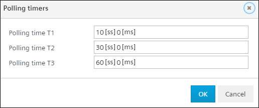
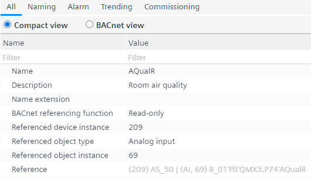

BACnet references
BACnet 引用任务允许您设计 BACnet 引用对象。该任务适用于所有版本 1.3 及更高版本的可编程设备。 BACnet 引用可以像编程编辑器或 BACnet 客户端中的任何其他数据点 /object 一样使用。看Creating a reference in the programming editor了解如何在编程编辑器中为低于设备版本 1.3 的可编程设备版本创建参考。使用 BACnet 引用报告可概览所有已使用的 BACnet 引用对象及其与其源对象的关系。前往Building > Building structure用于报告。
Video创建 BACnet 引用
① Task selector
任务 | 描述 |
|---|---|
I/O 配置 | |
MODBUS | |
M总线 | |
KNX PL-Link | |
BACnet references | |
BACnet objects | |
编程 |
② Plants navigation view
这Plants导航视图显示设备的工厂层次结构。
命令 | 描述 |
|---|---|
添加数据点 | 打开添加数据点窗口，您可以在其中创建新的 BACnet 参考对象。 |
Context menu for Plants navigation view
要显示上下文菜单，请右键单击某个元素。
③ Toolbar
命令 | 描述 |
|---|---|
状态 | 指示应用程序的状态。绿色表示应用程序在线并正在运行或暂停。
|
查看 | 检查重复的名称。该检查在加载设备之前自动完成。 |
（玩） | 仅当设备在线时可见。激活在线会话并加载所选设备的更改。 |
（暂停） | 仅当设备在线且在线会话启动时可见。停用活动的在线会话。 |
④ Overview
概述选项卡显示有关 BACnet 参考对象的信息。
对于每个 BACnet 引用对象，每个设备有 3 个轮询定时器 T1、T2、T3。点击Polling timer在出现的窗口中修改轮询时间。

命令 | 描述 |
|---|---|
描述 | BACnet 参考对象的描述。 |
Unit/State text | BACnet 参考对象的 Active/Inactive 状态。 |
功能 | BACnet 参考对象的功能。只读 – 读取/Write – 读取/Command. |
设备实例 | BACnet 引用对象引用（源）的设备实例号。 |
对象类型 | BACnet 引用对象引用（源）的对象类型。 |
对象实例 | BACnet 引用对象引用（源）的对象实例编号。 |
模式 | BACnet 参考对象的更新模式。更改为 COV（值更改）或使用轮询计时器 T1、T2、T3。 |
（令人震惊） | 启用 BACnet 参考对象的内部警报。选择True过滤具有激活报警功能的物体。 |
(趋势） | 为选定的 BACnet 参考对象创建趋势。选择True过滤具有激活的趋势功能的对象。 |
姓名 | BACnet 引用对象的名称。 |
⑤ Projects
“项目”选项卡是从任何现有 ABT 站点项目创建 BACnet 参考对象的源选项卡，该对象可在 PC 上找到。选择您在此 PC 上找到的任何现有 ABT 站点项目，将其用作 BACnet 参考对象的源。默认情况下，选择当前项目。
在工作区的上部，您可以看到建筑结构，它允许您浏览所有可用的设备和项目的建筑。
柱子 | 描述 |
|---|---|
姓名 | 所选 ABT 场地项目的建筑结构元素的名称。 |
描述 | 所选 ABT 场地项目的建筑结构元素的描述。 |
地点 | 设备在所选 ABT 站点项目中的位置。 |
类型 | 设备类型，例如所选 ABT 站点项目中的 DXR2.E.10。 |
设备实例 | 与所选 ABT 站点项目中的 BACnet 设备关联的设备实例号。 |
在下半部分，您可以看到所选自动化站的可用 BACnet 属性。
柱子 | 描述 |
|---|---|
描述 | 对象的描述。 |
姓名 | 对象的名称。 |
设备实例 | 与 BACnet 设备关联的设备实例号。 |
目的 | 对象符合 BACnet 标准。 |
⑥ EDE import
此任务允许用户从其他 BACnet 设备导入 EDE 文件，以便于集成。
柱子 | 描述 |
|---|---|
Import EDE | 打开通用资源管理器浏览器，供用户从 PC 中选择所需的 EDE 文件。 |
Delete EDE | 从设备文件夹中删除当前选定的文件。仅当 EDE 文件属于当前控制器时，这才有可能。 |
文件下拉菜单 | 显示当前打开的 EDE 文件，具有以下命名字符串：保存文件的控制器名称 > EDE 文件名。 下拉列表允许用户选择项目中以前使用过的任何 EDE 文件，这些文件也存储在其他控制器中。 |
创建规则 | 具有多项选择的下拉菜单允许用户在创建 BACnet 参考对象时选择将重用 EDE 文件中的哪些参数。
|
EDE 导入任务完成后，详细信息将在 EDE 导入窗口中列出。
柱子 | 描述 |
|---|---|
姓名 | EDE 文件中的对象名称。 |
描述 | EDE 文件中对象的描述。 |
设备实例 | 与 EDE 文件中的对象关联的设备实例号。 |
目的 | 对象符合 BACnet 标准。 |
Unit/State text | Unit/State 文本属性。 |
最小 | 当前最小值。 |
最大限度 | 当前最大值。 |
价值 | 配置对象的当前值。 |
⑦ Library and Properties
库和属性区域位于窗口的右侧。您可以切换Library和Properties选项卡..Library视图包含可以直接拖动到工作区域的元素。您可以将 BACnet 参考对象存储到自定义库中并在其他设备或项目中重复使用。
这Property视图显示所选元素的属性。中显示的项目Property视图取决于所选对象类型。
用户可以在属性‘中看到引用对象的名称Reference’。对于外部参考，设备名称和实例也是可用的。

Context menu
上下文菜单的内容在编辑器的不同部分有所不同。
柱子 | 描述 | 可查看/tap |
|---|---|---|
添加数据点 | 打开Add data point您可以在其中手动创建新的 BACnet 参考对象的窗口。 |
|
删除 | 删除选定的对象。 |
|
复制 | 创建选定对象的副本。 |
|
重命名 | 打开Rename设备窗口，您可以在其中更改所选对象的名称和描述。 |
|
厂内展示 | 打开选定的对象Plants导航视图。 |
|
在节目中显示 | 在程序视图中打开选定的对象。 |
|
打开属性 | 打开所选对象的属性。 |
|
复制 | 复制是对工作流程的支持Creating a reference in the programming editor仅有的。 |
|
创建只读参考 | 将创建一个使用 read/write 函数引用对象的 BACnet |
|
创建引用 read/write | 将创建一个使用 read/write 函数引用对象的 BACnet |
|
创建引用 read/command | 将创建一个使用 read/command 函数引用对象的 BACnet |
|

某些 BACnet 引用函数并非适用于所有对象类型。